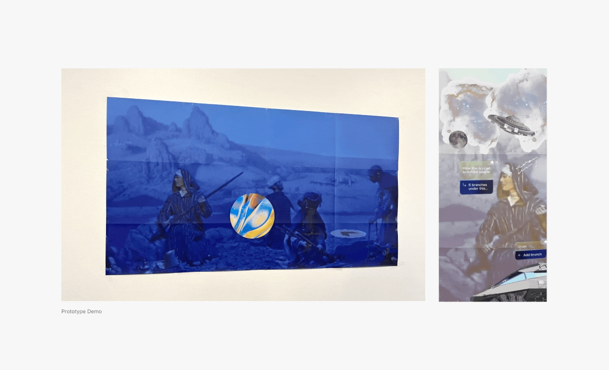
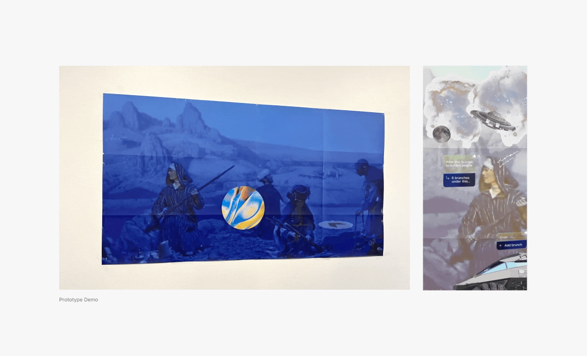

With a sponsor from AMNH(American Museum of Natural History), our design approach is to use Afrofuturism as an added lens in the Hall of African peoples at AMNH (American Museum of Natural History) to imagine an afrocentric future, revitalize the past image of African People. Our team got a wonderful opportunity to go to a 4S Conference to present our design concept to public.
Teammates: Jiaying Wang, Shiyi Chen, Rose Kim
The Hall of African Peoples at AMNH doesn't present the intellectual part of African culture and miss the narratives from African Americans and audiences. So we designed with the approach using Afrofuturism and imagine an afrocentric future, revitalize the past image of African people.
Design rules of ours:
Our design should be inclusive, innovative and accessible.
Avoid coloniality in technology.
Embrace absent voices, including the narratives from African Americans and visitors.
Pose questions to visitors to promote actions, thinkings and reflections.
Our team dived deep into the hall and to see the intention behind the exhibited items. Also by observing entire building and see how each halls has been curated, we could find some opportunities.

Among the exhibited items, what we focused was dioramas. 4 dioramas in total were exhibited for a long time without a consideration or respect for African culture. So what we did was to find a resource that is already existing in AMNH and to find a way to use the resource as possible while we provide a different perspective to see the exhibition.
 

Visitors will go through multiple stages of workshop and AR experience. For example, we have an educational program for teens starting from lecture. It is given by Afrofuturism artists and workshop held by AMNH to create fictional contents, such as poems and drawings. The purpose is to educate the younger generation to understand African cultures through creativity and imagination.
After that, visitors will experience Afrotoypia app which allow users to explore the Hall of African Peoples with AR collages and tagging activities. To reveal the hidden narratives in the Hall of African Peoples and encourage learning and understanding for teens.
We designed with neon green and purple color to give the image of future, which enables users to see the hall in a different perspective.